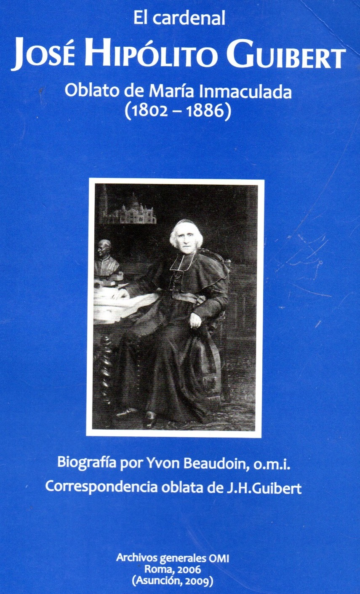

Indice General
Indice BiblioOMI

El cardenal José Hipólito GuibertOblato de María Inmaculada (1802 -1886)Biografía(Yvon Beaudoin, o.m.i.)Correspondencia oblataTraducción de O. Domínguez, o.m.i.Archivos generales OMIRoma, 2006(Asunción, 2009)